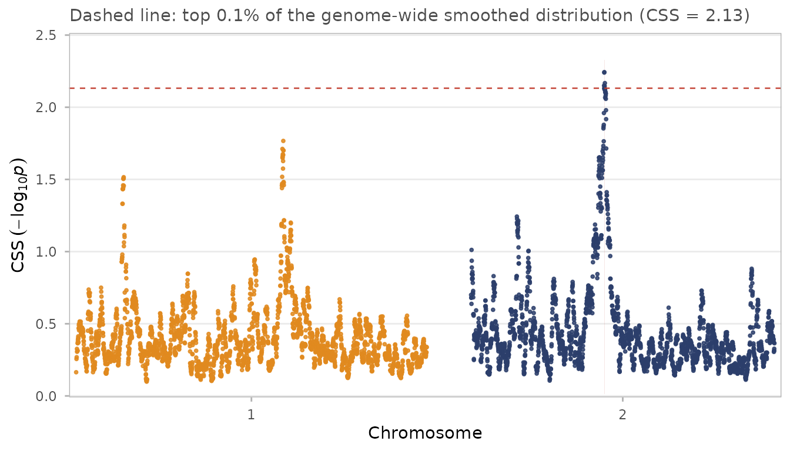
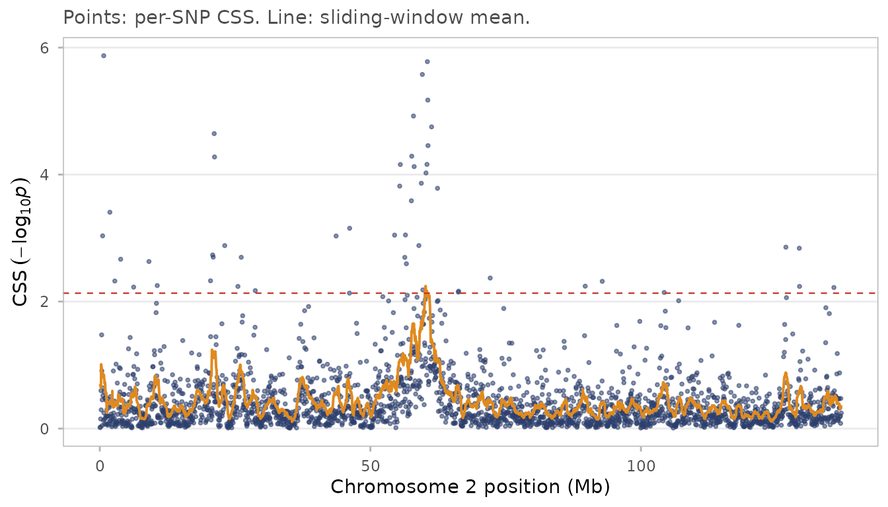
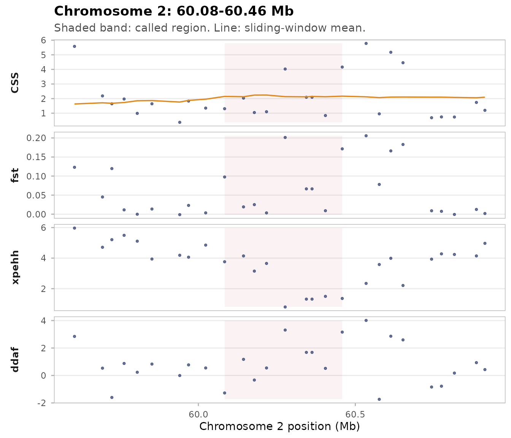
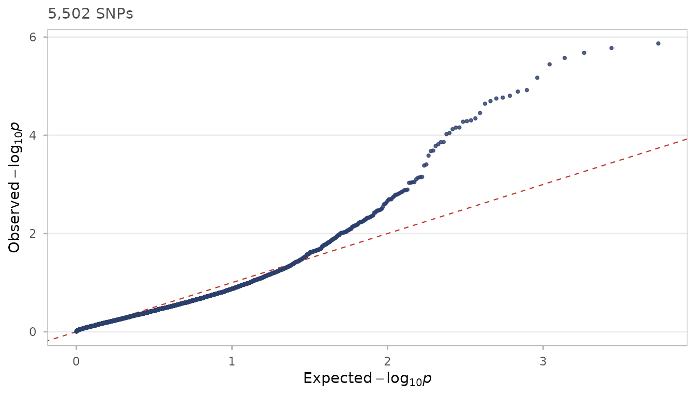
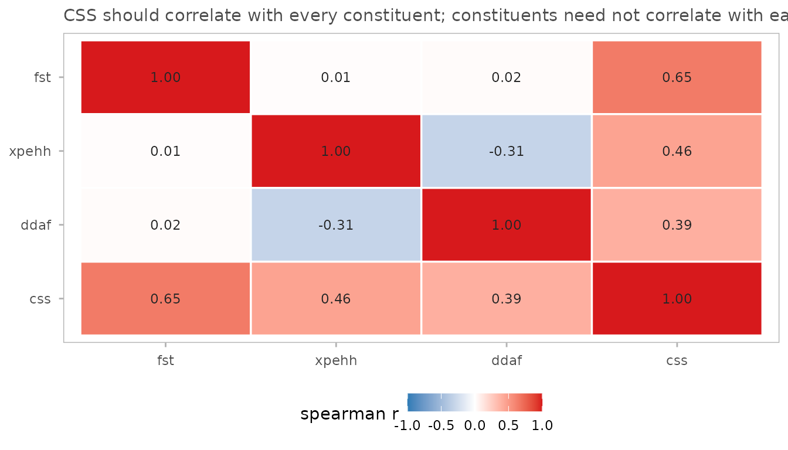

What CSS does
Composite selection signals (CSS) combine several selection tests into one index. Each constituent test is ranked genome-wide, the ranks become normal quantiles, and the quantiles are averaged across tests at every SNP. A locus where several tests agree rises; a locus where only one test is extreme is pulled back towards the genome-wide average.
The method is due to Randhawa, Khatkar, Thomson and Raadsma (2014, 2015).
The input
cssig starts from pre-computed constituent
statistics, one row per SNP. It does not read VCFs or compute
XP-EHH; use rehh, selscan or
hapbin for that and bring the results here.
data(css_sim_small)
head(css_sim_small[, .(chr, pos, fst, xpehh, ddaf)])
#> chr pos fst xpehh ddaf
#> <fctr> <num> <num> <num> <num>
#> 1: 1 31502 0.033731900 -0.400611 -1.601780
#> 2: 1 185282 -0.000442191 -0.789998 -0.258591
#> 3: 1 265069 0.024843400 -0.905406 -1.168970
#> 4: 1 391046 0.009940270 -0.602531 0.830885
#> 5: 1 442469 0.005942830 0.781350 -0.631699
#> 6: 1 577946 0.015554700 0.400111 1.054750These are simulated data with sweeps in known places — see
?css_sim for how they were generated, and
css_sim_truth for the answers.
css_input() validates the table and records, per test,
which direction means “more evidence of selection”:
The pipeline
res <- css(x)
res <- css_smooth(res, half_width = 5e5, min_snps = 5)
res <- css_threshold(res, top = 0.001)
#> Threshold on smoothed CSS: top 0.1% at 2.1320 (6 SNPs), top 1.0% at 1.5565 (56 SNPs).Each stage adds columns to res. Because
data.table assigns by reference, no copy of the table is
made between stages — but the object you passed to
css_input() is never touched:
If you would rather each stage returned a fresh copy, pass
.copy = TRUE.
Calling regions
Two rules are available, one from each paper. "cluster"
(the 2014 rule) wants at least three significant SNPs within a window;
"flank" (the 2015 rule) wants one top-0.1% SNP flanked by
five top-1% neighbours.
reg <- css_regions(res, method = "cluster")
summary(reg)
#> Key: <chr>
#> region chr position span_kb peak_Mb peak_css n_snps n_sig n_fst n_xpehh
#> 1: 1 2 60.08-60.46 375 60.217 2.24 6 6 0 0
#> n_ddaf
#> 1: 0
#>
#> Positions in Mb. n_* columns count SNPs in each test's own top fraction.The n_* columns count how many SNPs in each constituent
test’s own top fraction fall inside the region. This is the
comparison in Table 2 of the 2014 paper, and it is how you tell whether
a composite signal is supported by several tests or driven by one.
Plots
css_manhattan(res, regions = reg)
css_chrom_plot(res, chr = "2")
Points are per-SNP CSS; the line is the sliding-window mean.
if (nrow(reg)) css_region_plot(res, reg[1])
Checking the null
Under no selection the CSS p-values should be uniform. A QQ plot that leaves the diagonal along its whole length, rather than only at the tail, means the null is miscalibrated — usually because the constituent tests are strongly correlated.
css_qq(res)
css_test_cor(res)
CSS should correlate with each constituent. The constituents need not correlate much with each other — that they do not is exactly why combining them helps.
Three things worth knowing
CSS depends only on ranks. Standardising XP-EHH or ΔDAF to N(0,1), as both papers do, leaves CSS exactly unchanged. It matters only for plotting. More generally, any strictly increasing transform of a constituent test gives identical CSS:
d2 <- copy(css_sim_small)
d2[, fst := exp(fst * 5)]
r2 <- css(css_input(d2, tests = c(fst = "high", xpehh = "high", ddaf = "high")))
all.equal(res$css, r2$css)
#> [1] TRUERanks are genome-wide. Adding or removing SNPs changes every SNP’s CSS. Keep the SNP set fixed when comparing runs.
Smoothed scores are not p-values.
css_smooth() averages −log10(p) over neighbouring
SNPs; the result is a useful score but no longer a p-value, so
css_fdr() refuses smoothed input. Estimate FDR first, then
smooth:
fdr_res <- css_fdr(css(css_input(css_sim_small,
tests = c(fst = "high", xpehh = "high", ddaf = "high"))),
method = "BH")
#> FDR (BH): 30 SNPs with q <= 0.05, 13 with q <= 0.01.
sum(fdr_res$qval <= 0.05)
#> [1] 30And the raw CSS p-value is not calibrated either.
The formula p = 1 − Φ(√m · Z̄) assumes the constituent
tests are independent. They are not, and the correlation is not always
positive — in css_sim, XP-EHH and ΔDAF correlate at about
−0.32, which deflates the variance of Z̄:
r_full <- css(css_input(css_sim_small,
tests = c(fst = "high", xpehh = "high", ddaf = "high")))
sd(sqrt(3) * r_full$zbar) # 1.0 only if the tests were independent
#> [1] 0.9085172So treat CSS as a ranking, not as a calibrated tail
probability. This is why both papers threshold on the empirical top 0.1%
rather than on a p-value, and why css_fdr()’s output
deserves a look at css_qq() before you lean on it. See
?css_fdr for the details.
Where to go next
-
vignette("simulation")— how the example data were built, a power comparison of CSS against each constituent test on data where the truth is known, and a worked demonstration of theweightsargument. -
?css_reciprocal— the signed, two-direction contrast of the 2015 paper. -
?css_circos— the circular multi-track plot.
References
The method is defined in the first of these; the second extends it to complex traits and adds the reciprocal cohort contrast.
Randhawa IAS, Khatkar MS, Thomson PC, Raadsma HW (2014). Composite selection signals can localize the trait specific genomic regions in multi-breed populations of cattle and sheep. BMC Genetics 15:34. doi:[10.1186/1471-2156-15-34](https://doi.org/10.1186/1471-2156-15-34)
Randhawa IAS, Khatkar MS, Thomson PC, Raadsma HW (2015). Composite selection signals for complex traits exemplified through bovine stature using multibreed cohorts of European and African Bos taurus. G3 5:1391-1401. doi:[10.1534/g3.115.017772](https://doi.org/10.1534/g3.115.017772)
citation("cssig")
#> To cite cssig, please cite the two papers describing the CSS method:
#>
#> Randhawa I, Khatkar M, Thomson P, Raadsma H (2014). "Composite
#> selection signals can localize the trait specific genomic regions in
#> multi-breed populations of cattle and sheep." _BMC Genetics_, *15*,
#> 34. doi:10.1186/1471-2156-15-34
#> <https://doi.org/10.1186/1471-2156-15-34>.
#>
#> Randhawa I, Khatkar M, Thomson P, Raadsma H (2015). "Composite
#> selection signals for complex traits exemplified through bovine
#> stature using multibreed cohorts of European and African Bos taurus."
#> _G3 Genes|Genomes|Genetics_, *5*, 1391-1401.
#> doi:10.1534/g3.115.017772 <https://doi.org/10.1534/g3.115.017772>.
#>
#> To see these entries in BibTeX format, use 'print(<citation>,
#> bibtex=TRUE)', 'toBibtex(.)', or set
#> 'options(citation.bibtex.max=999)'.